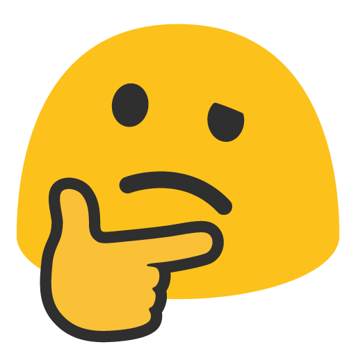

The watr style
How my sites look, written down so every new one starts from the same place. One hue at four depths, square buttons, soft fields, and shadows that always fall down and to the right. The hue, the intensity and the depth change from site to site. The rest stays put, and that's how you can tell it's mine.
Knobs
These change per site. Drag them and the whole page follows. When it feels right, copy the snippet into the new site's CSS after watr.css.
Real sites
Made-up examples, to show how far the knobs go
Keep
The signature. Every site gets all of these, whatever the knobs say.
One hue, four depths
Bright for buttons, mid for hover, bar for the frame, deep for disabled. No second accent. Red and yellow only ever mean danger and warning.
Light from the top-left
Every raised thing casts its shadow down and to the right, equal x, y and blur. Never a soft glow all around.
Framed by bars
A full-width bar on top, optional notice strips stacked under it, a footer at the bottom. The bars are the surface color with normal text, so the page doesn't shout; the hue is saved for what you can press. The bar and its strips are one block, so only the bottom of the stack casts a shadow.
the watr files
The waterline
Two-sided layouts put words on the left and the thing on the right, split by one thin solid line in the hue. On phones it goes flat. The same line sits under table headers and tabs.
Square buttons, soft fields
Buttons have hard corners and black text on bright. Fields are filled grey, no border, slightly rounded. The contrast between the two is the point.

The blob
Error and empty states get a big expressive blob emoji beside the message. Each site can pick its own face.
Plain, deadpan
Everything in normal sentence case. Copy says what happened in plain words, with one in-joke per page at most.
Everything moves at 0.2s
Hover, open, close, theme change: one speed for all of it. Hover this box. Turned off for people who ask for reduced motion.
Parts
The pieces in watr.css. Class names are under each heading.
Frame .watr-bar __search __cta .watr-mark .watr-strip .watr-footer--cols
This site is incomplete!
Maintenance tonight at 11pm.
The bar is the surface color by default. .watr-bar--color and .watr-footer--color bring back the full-hue frame. The current page's link gets aria-current="page" and a bright line under it. The search box hides between 600 and 1000px wide and moves into the menu on phones. A plain .watr-footer without --cols is still one centered line.
Buttons and fields .watr-btn
Checks and switches .watr-check .watr-switch
Tabs and dropdowns .watr-tabs .watr-dropdown .watr-menu
More
Messages .watr-msg
Toasts .watr-toast watr.toast()
They stack in the bottom-right corner, where the shadows fall. The line along the bottom is the timer: hover a toast to pause it. Danger toasts stay until you close them.
Uploaded backup.zip
Link copied
You've used 90% of your storage.
Upload failed. The file is over 2 GB.
Modals .watr-dialog --danger --blob
Table .watr-table --compact --stack --color
| Role | |||
|---|---|---|---|
| sword | Admin | 214 | 2025-03-14 |
| watrboi | Admin | 1,032 | 2024-11-02 |
| bubbles | Member | 87 | 2026-01-18 |
| centipede | Member | 12 | 2026-09-30 |
| lurker | Banned | 0 | 2026-05-05 |
Click a header to sort. On a phone, --stack turns each row into a card. The full-size table is in the mockup below.
Small stuff .watr-tag .watr-avatar .watr-crumbs .watr-pages .watr-progress .watr-loading [data-watr-tip]
Split .watr-split
Login
The watr files
so basically like you
know when like the centipedes
🐛 Sword 2026
Blob .watr-blob
Sidebar .watr-shell .watr-side __item __promo __links --color .watr-burger
Light on the left, --color on the right. Always on the left side of the page, so its shadow falls onto the content. See it working in the mockup.
Mockup
A watrfiles page made only from the parts above. It works: pick a folder in the sidebar, switch tabs, sort the columns, tick rows, try Upload, or use the more menu.
The three-line button in the bar folds the sidebar away, and the page remembers it. Under 800px wide it opens as a drawer instead. Width is a knob up top.
This site is incomplete!
- Files
- Backups
Backups
More
| Sharing | |||||
|---|---|---|---|---|---|
| Backup.zip | 12.4 MB | Sword | 2026-10-02 | Public | |
| Centipede.png | 840 KB | Sword | 2026-09-28 | Private | |
| Old-site.tar.gz | 156 MB | Watrboi | 2026-08-11 | Public | |
| Watrlabs-logo.psd | 23.1 MB | Watrboi | 2026-07-30 | Private | |
| Notes.txt | 2 KB | Sword | 2026-06-04 | Expires friday |
Voice
Normal sentence case everywhere. Plain about what happened, a little weird around the edges.
| Where | Like this | Not this |
|---|---|---|
| Nav links | home · files · accounts | Home · My Files · Account Settings |
| Buttons | Go back · Upload · Delete file | Submit · OK · Click here |
| Errors | Your passwords do not match. | Oops! Something went wrong 😅 |
| Server errors | An issue occurred on our side! Try again later. + panic blob | Error 500: Internal Server Error |
| Side panels | one in-joke quote with a fake attribution, like "- sword 2026" | A marketing blurb about the product |
| Notices | This site is incomplete! | We're working hard to bring you an amazing experience |
New site
Do these in order when starting something new.
- Link
watr.cssbefore your own CSS. - Pick a hue at least 40° away from your other live sites (watrfiles is 196, the watrlabs logo is 237) and set it with the knobs above.
- Decide how loud it is: intensity, lift and heading weight. Change at least one of them from the last site you made.
- Pick the layout: bar + sidebar (
.watr-shell) for an app, split for auth and landing pages, one column for docs. With a sidebar, pick light or colored and set its width. - Pick this site's blob for the 404 and 500 pages, and write its one quote.
- Check the keep list. If something on it is missing, add it back before shipping.